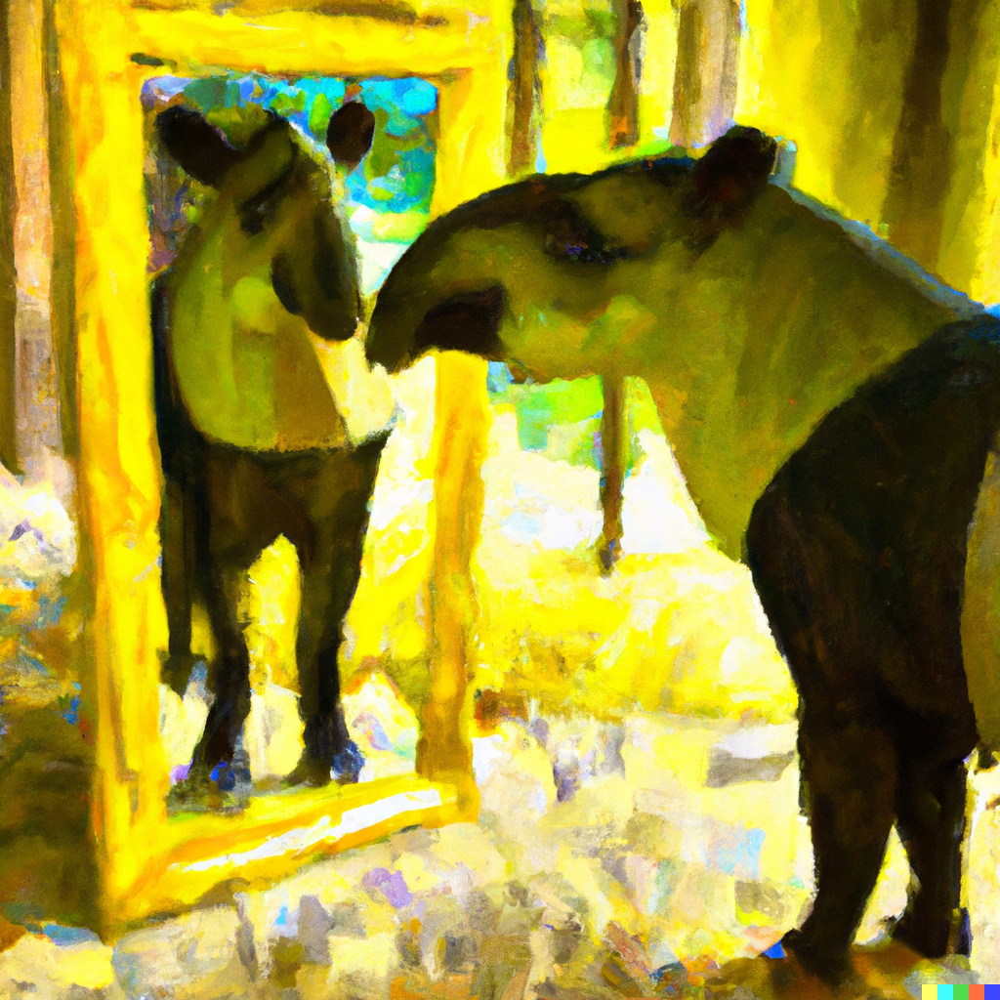

AUTHOR NAME
Chapter Name
Subchapter name
Picture name
About the author
Published with bookdown
TITLE
Chapter Name
This chapter has a picture of a tapir looking in a mirror. Maybe we should say something about it?
Subchapter name
Picture name
